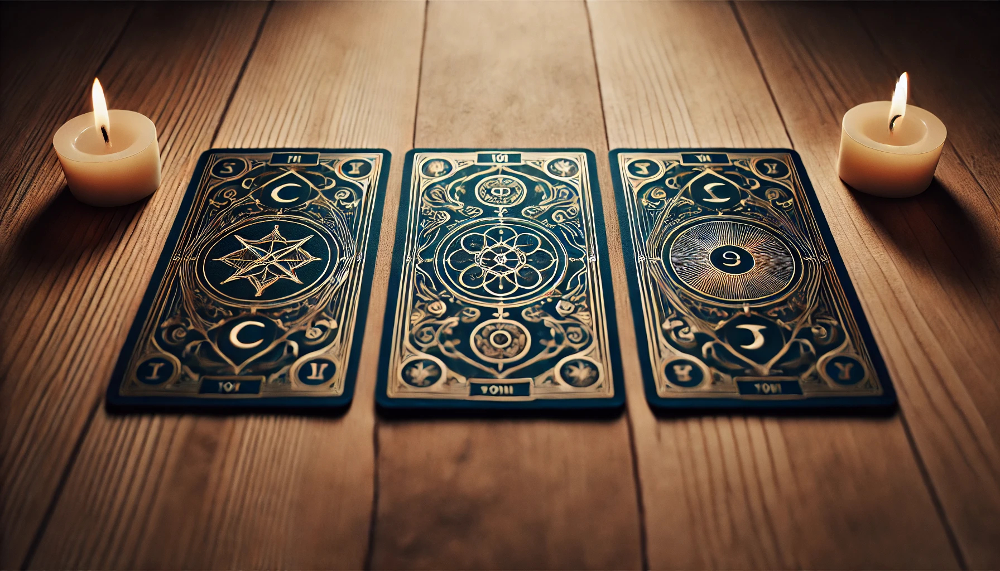
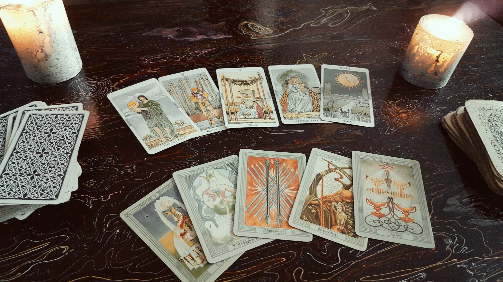
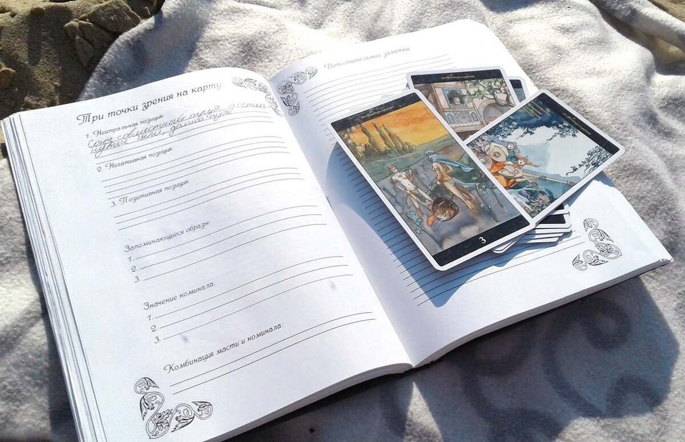

Таро – это система из 78 архетипических символов, помогающая структурировать вопросы и видеть варианты развития событий, а не «заглядывать в судьбу» с абсолютной точностью. Ключ к успешной практике – корректная формулировка вопросов, этика и регулярная тренировка с простой колодой и базовыми раскладами. В этой статье подробно разберем, как гадать на картах Таро, как раскладывать и задать вопрос правильно, как читать и понимать
Почему 90% новичков бросают Таро через месяц (и как этого избежать)
Суровая статистика: большинство людей, купивших первую колоду, забрасывают ее через 3–4 недели. Причина проста – одиночное плавание без обратной связи. Книги и статьи дают теорию, но кто скажет, правильно ли вы читаете Башню в позиции «совет» или тянете не те карты для вопроса о работе?
Решение, которое работает: структурированное обучение Таро с разборами и поддержкой. Для тех, кто хочет самостоятельно попробовать без вложений, рекомендуем бесплатные проверенные курсы для быстрого старта. Эти материалы наверняка помогут правильно выучить все пошагово.
👉Бесплатный марафон “Начинающий таролог”. Онлайн-школа Анастасии MON.
👉Онлайн практикум “Как читать карты Таро”. Онлайн-школа Таро Анастасии Лыковой.
👉Вебинар «Таро для начинающих». Онлайн-школа Элара.
👉Вебинар «Узнай причину популярности ТАРО в повседневной жизни». Международная Академия Юлии Бульбаш «ПУТЬ ГУРУ».
Что такое Таро
Как работают Таро. Колода состоит из 22 Старших и 56 Младших арканов, в которых первые описывают ключевые жизненные этапы и силы, а вторые – повседневные сюжеты и динамику. Это делает колоду одновременно символической «картой местности» и инструментом рефлексии, а не фатального предсказания.
Новичкам рекомендуется стартовать с колоды Райдера–Уэйта – в ней иконография интуитивна / проще трактовать, а учебных материалов больше всего. Альтернативы (Марсельская, Манара) лучше осваивать позже, когда базовая символика уже знакома.
Практический режим работы прост: выбрать колоду, создать настрой (тишина, фокус), перетасовать, выложить 3–10 карт по схеме расклада, посмотреть и интерпретировать, опираясь на значения и контекст вопроса, фиксируя выводы в дневнике для наработки «оперативной памяти» символов.
Чего ожидать от практики
Таро (если правильно пользоваться) показывает поле вероятностей и сценариев, а не «единственную истину»: точность чтения зависит от того, насколько ясно сформулирован вопрос, как удерживается фокус и насколько этично обрабатывается запрос без проекции желаемого исхода. Результат – это синтез справочных значений, наблюдений и интуитивных связок. С практикой глубина чтения растет, но ошибки неизбежны и ценны как обратная связь, если отслеживать их в дневнике и разбирать после событий.
Старт лучше делать с простых схем (3 карты Таро: прошлое–настоящее–будущее; или ситуация–совет–результат), переходя к «Кельтскому кресту», когда появится устойчивый навык удерживать целостную картину расклада.

С чего начать Таро: выбор первой колоды и базовые понятия
Начинать лучше с колоды Райдера–Уэйта, затем познакомиться с ее структурой из 78 карт (22 Старших и 56 Младших арканов) и базовыми мастями Жезлы, Кубки, Мечи, Пентакли. Это визуально понятная система для новичков с богатой учебной базой.
Первая колода: выбор
Для старта рекомендуется универсальная колода Райдера–Уэйта: в ней прорисованы сцены на всех картах, включая Младшие арканы, благодаря чему образы легче «считывать» и связывать в историю расклада. Эту систему часто называют «золотым стандартом» для обучения и практики: под нее написано больше всего книг, курсов и шпаргалок, а визуальная насыщенность помогает новичкам быстрее войти в символику. При выборе в целом ориентир – понятность изображений и удобство работы: если сцены читаются интуитивно, обучение идет быстрее. Для первых шагов подойдут наборы с понятными инструкциями и простыми раскладами.
Знакомство с колодой Таро
Структура классической колоды – 78 карт: 22 Старших аркана и 56 Младших, что задает «скелет» символической системы и баланс между глубокими темами и повседневной конкретикой. Полезно начать с обзорного прохода: пролистать колоду, отмечая первые ассоциации, затем сверяться со справочником – так формируется собственный словарь образов, а не механическое заучивание.
Важный прием для новичка – отслеживать соотношение Старших и Младших арканов в раскладе. Преобладание Старших указывает на архетипические повороты, а Младших – на практические детали и шаги.
Базовые термины Таро
- Старшие арканы – 22 карты архетипического уровня (Шут, Маг, Императрица, Башня и т.д.), сигнализирующие о ключевых этапах и «больших смыслах». Их доминирование в раскладе усиливает «вес» происходящего.
- Младшие арканы – 56 карт, разделенных на 4 масти и составленных из числовых (Туз–Десятка) и придворных (Паж, Рыцарь, Королева, Король). Они описывают частные ситуации, действия и эмоциональные нюансы. Масти: Жезлы – огонь, воля, проекты и импульс; Мечи – воздух, мышление, решения и конфликты; Кубки – вода, чувства, отношения и интуиция; Пентакли – земля, материальные дела, ресурсы и тело.
Практические советы перед началом
Перед практикой Таро стоит продумать базовый алгоритм: тихое место, ясная формулировка вопроса, тасование, простой трехкарточный расклад и фиксация заметок – это снижает «шум» чтения и ускоряет обучение. Для первых недель хватит расклада на 3 карты (прошлое–настоящее–будущее) и дневника раскладов. Регулярность важнее количества колод, а инструкции в комплекте помогут не теряться в значениях. Новичкам полезно обращать внимание на сюжет на карте, а уже потом смотреть справочник – так развивается наблюдательность и способность видеть связи между выложенным на столе, а не «угадывать по подсказкам».
Подготовка к гаданию: настрой, место, атрибуты
Подготовиться к раскладу Таро – это про тишину, фокус и повторяемый ритуал: нейтральное пространство, минимальные атрибуты (свеча, благовоние по желанию), короткая настройка дыханием и ясное намерение. После сеанса – фиксация расклада в дневнике для обучения и обратной связи.
Тишина и настрой
Самый простой и рабочий стандарт – обеспечить отсутствие помех: тихое место, убранная поверхность, отключенные уведомления, при желании – спокойная музыка без слов, чтобы не перегружать внимание. Быстро войти в рабочее состояние помогает связка из 2–3 минут глубокого дыхания, короткой визуализации «заземления» и формулирования намерения вслух или письменно. Повторяемость ритуала важнее «магичности»: одинаковая последовательность действий создает якорь, снижает внутренний шум и повышает качество чтения.
Атрибуты без перегруза
Атрибуты – опциональны и служат концентрации: достаточно одной белой свечи и, по желанию, легкого благовония. Излишняя «сцена» часто отвлекает и дает эффект ожиданий. Рабочая поверхность (алтарь) может быть самой простой: ткань или доска – важно лишь, чтобы на ней ничего лишнего не мешало тасовать и раскладывать карты Таро. Если привычны элементы 4 стихий (свеча, благовония, чаша воды, соль/земля) – их можно расставлять по углам рабочей поверхности, но это эстетика и настрой, а не обязательная техника.
Очистка пространства и колоды
Перед началом достаточно базовой гигиены: физически прибрать стол, проветрить комнату и задать намерение «чистого чтения» – этого хватает для большинства практик. При желании используют мягкие способы «очистки»: свеча, проветривание, звуковой тон, вода во фокус‑точке. Без дыма можно обойтись альтернативами из списка нехимических методов. Для отдельной чистки колоды Таро применяют щадящие методы (очистить помогает мешочек с солью на 1–3 дня, аккуратная выкладка с четырьмя свечами), избегая агрессивных воздействий.
Зачем вести записи
Дневник раскладов – главный инструмент роста: он фиксирует вопрос, расклад, ключевые трактовки и фактический исход, чтобы через время проверить гипотезы и корректировать личные значения. Записи ускоряют запоминание арканов и их сочетаний, помогают увидеть паттерны и перестать «подгонять» ответ под ожидания в моменте. Форматы разные: «карта дня», карточки по арканам, сравнение своих трактовок с чужими – цель одна: построить персональную рабочую энциклопедию и базу кейсов.
Как правильно задать вопрос Таро (примеры)
Хороший вопрос к Таро – открытый, конкретный и ориентированный на действия. Избегать нужно вторжения в жизнь третьих лиц, бинарных «да/нет» и навязчивых повторов одной темы подряд.
Принципы конкретности
Рабочая формула – открытый вопрос о собственной зоне влияния: «Что поможет…», «Что мешает…», «Как действовать, чтобы…», – так расклад показывает условия, риски и шаги, а не загоняет в «да/нет». Фиксация вопроса письменно повышает ясность: при записи легче убрать лишние детали и скрытые ожидания, что снижает интерпретационный шум в раскладе. Этическая оптика критична: корректнее спрашивать о своей роли и выборе, а не о чувствах/планах других – это повышает валидность ответа и снимает конфликт границ.
Примеры формулировок
Вместо «Получится ли устроиться?» – «Какие шаги приблизят трудоустройство в ближайший месяц?» или «Что мешает пройти собеседования и как это исправить?». Вместо «Любит/не любит?» – «Как улучшить контакт и где мои слепые зоны в отношениях?»; вместо «Вернется ли он?» – «Что будет, если восстановить связь, и что будет, если отпустить ситуацию?». Для выбора полезны парные ветки: «Если выбрать А – что будет ключевым плюсом/риском? Если Б – какие последствия и цена?» – так карты сравнивают сценарии без гадания «на удачу».
Чего избегать в Таро
Не стоит спрашивать о здоровье, смерти, лотерее и частной жизни третьих лиц – это и этически проблемно, и плохо читается. Корректнее перефразировать на собственные действия и поддержку. Закрытые «да/нет» оставляют мало контекста. Новички часто ошибаются в трактовке бинарных ответов – открытая формулировка дает больше управляемого вывода. Избегать «перегрева» темы: когда вопрос задается снова и снова с надеждой «выбить» другой ответ. В этом случае растет проекционный шум, а качество чтения падает.
Как часто повторять темы
Оптимально выдерживать паузу до появления новых вводных: дней или недель, в зависимости от динамики ситуации. Частые повторы на одну тему дают разношерстные ответы и путают интерпретацию. Если повтор необходим, то менять угол запроса: «Что изменилось с момента прошлого расклада?» или «Какая одна поправка в плане действий даст наибольший эффект сейчас?». Полезно зафиксировать дедлайн актуальности: «Период – 2 недели», чтобы не дергать карты раньше срока и оценивать расклад по конкретному горизонту.
Пошагово: первый расклад
Первый расклад Таро лучше делать в формате «3 карты», с заранее заданными позициями и простым алгоритмом: цель – вопрос – тасование – выкладка – чтение по позициям – синтез – запись итогов. Читать последовательно слева направо, фиксируя ведущие арканы и связки.
Алгоритм «первый триплет»
Начать с формулировки открытого вопроса и горизонта времени (например, 2–4 недели), затем спокойно перетасовать колоду, удерживая фокус на запросе. После тасования вытаскивать 3 карты и разложить слева направо. Для новичка удобны позиции «прошлое – настоящее – будущее» или «ситуация – препятствие – совет», т.к. они создают понятный каркас причинно‑следственных связей без перегруза. После открытия – коротко описать, что видно на изображении, и лишь затем сверяться со справочником. Это уменьшает проекцию ожиданий и помогает выстроить собственный словарь.
Подсказки по чтению
Сначала читать каждую карту в своей позиции, потом – связки: повторяющиеся масти/числа, количество Старших/Придворных, направление взглядов на сценах. Это придает истории «стрелу времени». Если в триплете 2+ Старших арканов, тема «весомее» и касается глубинных развилок. Если преобладают Младшие – это про конкретные действия и прикладные шаги в ближнем горизонте. Завершать синтезом одной фразой: «Итог для горизонта Х: …; ключевой риск: …; ключевое действие: …» – и сверить с позицией третьей карточки, которая часто задает вектор результата.
Примеры рабочих схем «3 карты»
Было – стало – будет: линейная проверка динамики и причин. Полезна при анализе тенденции и прогресса. Мысль – чувство – действие: хорошо раскладывает внутренний конфликт на составляющие и подсказывает практический шаг. Фундамент – преграда – поддержка: выявляет опору, главный тормоз и ресурс, с которым можно ускорить исход.
Завершение и пост‑анализ
После синтеза зафиксировать в дневнике: вопрос, позиции, карты, трактовку, дедлайн проверки и последующие факты – это основа обучения и коррекции личных значений. Если ответ расплылся, не перетягивать «на ту же тему» сразу. Лучше переформулировать запрос или уточнить период и вернуться позже, чтобы не повышать шум. По итогам 5–10 триплетов можно пробовать усложнять схему (например, «Кельтский крест»), но только когда чтение связок внутри триплета стало ровным.

Популярные расклады для новичков
Для новичка рабочий набор Таро – «1 карта» для фокуса дня, «2 карточки» как «совет/предупреждение», «три» для причинно‑следственной картины, упрощенное «да/нет» для бинарных запросов и «ближайшее будущее» на 2–4 недели. В каждом случае заранее задаются цель и позиции.
1 карта – цель и позиции
Цель: быстрое прояснение фокуса, тенденции дня или ключевого совета по ситуации. Позиция: одна как ответ/тезис. Для начинающих допустимо использовать только Старшие арканы, чтобы получить более «громкий» сигнал. Алгоритм: сформулировать вопрос, перетасовать и вытянуть одну карточку. Зафиксировать ключевое слово и действие, сопоставив с контекстом.
2 карты – совет/предупреждение
Цель: увидеть «куда давить» и «чего избегать» в ближайшем шаге. Позиции: 1 – совет/ресурс; 2 – риск/предупреждение; читать как пересекающиеся элементы одной сцены, где вторая «ставит ограничитель» первой. Подсказка: коротко сформулировать правило пары, например «делать X, но учитывать Y», и проверить консистентность с исходным вопросом.
3 карты – базовые схемы
Цель: причинно‑следственная логика и ветка развития на коротком горизонте. Позиции (выбрать одну схему): «было – стало – будет»; «ситуация – препятствие – совет»; «фундамент – преграда – поддержка»; читать слева направо. Алгоритм: после описания выполнить синтез в одну фразу «итог – риск – действие» и зафиксировать в дневнике.
«Да/нет» – когда уместно
Цель: быстрый ориентир при бинарном решении, когда контекст уже понятен. Позиции: 1 карта как прямой ответ по полярности и ориентации; вариант продвинутый – 3 карточки, где 2+ прямых склоняют к «да», 2+ перевернутых – к «нет». Замечание: метод компактен, но теряет нюансы; для начинающих лучше сочетать с уточняющим триплетом «почему/что делать дальше».
Ближайшее будущее – 2–4 недели
Цель: увидеть динамику ближайшего периода без перегруза деталями. Позиции: 1 – недавнее прошлое (что влияет сейчас); 2 – текущее состояние; 3 – вероятный исход на заданный период; по желанию добавить 4‑ю «совет» для управляемости. Подсказка: если выпало 2+ Старших арканов – воспринимать как значимую развилку и перепроверить действия по карте «совет».
Как читать карты: прямые/перевернутые, сочетания, масти, роль интуиции
Читать Таро стоит по слоям – сначала позиции и сюжет, затем учитывать прямое/перевернутое положение, смотреть сочетания и доминирование мастей/Старших арканов, и только потом «докручивать» интерпретацию интуитивными сигналами.
Прямые и перевернутые
Работают 2 валидных подхода: либо использовать только прямые карты и читать спектр значения по контексту, либо подключать перевернутые и интерпретировать их как противоположность, ослабление/усиление, задержку или «блок» энергии. Новичкам допустимо начать без перевернутых, чтобы не терять детали сюжета на изображении. Перейти к перевернутым можно позже, выбрав единый принцип чтения и придерживаясь его. Типовые трактовки реверсов: противоположный смысл (освобождение вместо «ловушки» у Дьявола), изменение силы (ослабленная Тройка Мечей), временная отсрочка событий (Десятка Кубков с задержкой).
Сочетания и «химия» Таро
После чтения по позициям анализируются связки: повторы мастей, чисел, мотивов и направлений взглядов на сценах задают драматургию истории и «стрелу времени». Практический ориентир: Жезлы + Мечи часто про план и действие; Мечи + Кубки – баланс логики и эмоций. Следование таким «стихийным формулам» помогает быстро собрать общий тезис расклада. Придворные указывают на влияние конкретных ролей/людей. Множественность фигур усложняет прогноз и делает исход более зависящим от внешних акторов.
Доминирование мастей и Старших
Переизбыток Старших арканов поднимает «вес» темы: речь о мировоззренческих развилках и долговременных последствиях. Отсутствие Старших, наоборот, смещает акцент в практическую плоскость и быстрые шаги. Много Придворных – знак социальной насыщенности сюжета и повышенной непредсказуемости из‑за человеческого фактора. Множественные одинаковые номиналы и масти дают дополнительные маркеры стадии процесса. По стадиям чисел: 4–6 и Старшие IV–XII – фаза разгара; 7–9 и Старшие XIII–XIX – завершение; десятки и XX–XXI – итоги и поворот к новому циклу.
Интуитивные элементы Таро
Интуитивное чтение – не «угадывание», а работа с первыми ассоциациями, ощущениями в теле и странными мыслями, которые связывают карту с конкретикой запроса. Это дополняет справочные значения и делает совет применимым. Полезные практики: задать карточке вопрос «почему ты здесь?», зафиксировать первые слова/образы до просмотра толкователя и позволить телесным маркерам (легкость/тяжесть) усилить или смягчить трактовку. Если интуиция расходится с книжным значением, фиксировать обе версии и проверять по факту – со временем формируется личный словарь, а «голос» становится точнее.
Типичные ошибки новичков и как их избежать
Ключевые ошибки – расплывчатые вопросы, «перегадание» одной темы, чтение вне контекста позиций и подтасовка под желаемый ответ. Лечатся они дисциплиной формулировок, паузами между раскладами, уважением к позициям и нейтральной подачей.
Расплывчатые вопросы
Неопределенные формулировки («Что меня ждет?») размывают контекст и дают «скользкие» ответы. Лучше уточнять горизонт времени и сферу: «Как действовать в ближайшие 2 недели, чтобы продвинуться в поиске работы?». Вопрос должен быть важным для жизни и сформулированным максимально точно – иначе Таро «говорят обо всем и ни о чем». Рабочая техника – записывать вопрос и удалить лишнее, затем проверить, описывает ли он зону влияния, а не чужие мотивы и будущее «вообще».
Перегадание и эмоциональный перегрев
Повтор одного и того же вопроса, пока не выпадет «приятный» ответ, взрывает шум и снижает доверие к практике. Выдерживать паузы и возвращаться к теме только при новых вводных. Жесткое правило: определить один вопрос – один сеанс. Если расклад нечитабелен, фиксировать и отложить, а не тянуть снова «на удачу». Сильные эмоции и стресс искажают чтение – лучше перенести сессию, выполнить короткую настройку и вернуться с трезвым фокусом.
Игнор контекста позиций
Карты Таро читаются в рамках заданной роли: «совет», «препятствие», «исход» – и один и тот же аркан в разных позициях означает разные вещи. Обрыв контекста ведет к грубым ошибкам. Практический пример: Башня в позиции «совета» трактуется как «ломать устаревшее», а не «ждет катастрофа» – позиция определяет синтаксис чтения. В сложных раскладах полезно проговаривать вслух значение каждой позиции до открытия – это фиксирует рамку и снижает риск «унести» трактовку.
Желание услышать желаемое
Проекция собственных надежд/страхов незаметно подменяет интерпретацию. Антипод – нейтральность и привязка тезисов к сценам, а не к ожиданиям. Техника безопасности: короткая пауза и вопрос к себе «это мое чувство или из карты?», затем проверка итоговой фразы на соответствие исходному вопросу и позициям. Рекомендуется держать «золотую середину» между буквализмом и произволом: опираться на образы и связки, но не «дорисовывать» желаемое.

Как избежать ошибок – чек‑лист
✅ Записывать вопрос, позиции и горизонт. Проверять, что запрос про собственные действия.
✅ Делать паузу между повторами темы. Не перетасовывать до «нужной» комбинации.
✅ Читать по позициям, затем по связкам. Избегать «карты вне контекста».
✅ Проверять себя на проекцию: формулировка «итог‑риск‑действие» с опорой на конкретное изображение.
Практика и рост
Устойчивый рост в Таро держится на 3 китах – регулярной практике с «карточкой дня» и простыми раскладами, дисциплине ведения дневника с проверкой исходов и аккуратном расширении колод/схем вместе с изучением авторитетных источников.
Дневник раскладов
Дневник – опора для системного прогресса: фиксируются вопрос, схема, трактовка, срок проверки и фактический исход, чтобы со временем отточить личные значения и убрать самообман (расшифровать будет проще). Форматы полезны разные: «карта дня», карточки по арканам с первыми ассоциациями, каталог сочетаний и примеров из практики – это превращает записи в персональную энциклопедию. Для консультативной практики уместно вести и «клиентскую» статистику: темы, расклады, обратная связь – это ускоряет обучение и помогает видеть повторяющиеся паттерны.
Регулярность и режим
Регулярные короткие сессии эффективнее редких «марафонов»: ежедневная «карта дня» плюс 2–3 триплета в неделю дают быстрый прирост точности и словаря образов. Чередование форматов поддерживает тонус: день – интуитивный разбор одной карточке, день – структурированная схема с позициями и синтезом «итог‑риск‑действие». Дисциплина включает гигиену пауз: одно и то же не «перегадывать» до новых вводных, чтобы не разгонять шум и сохранять доверие к процессу.
Расширение колод и схем
Логика эволюции проста: освоить колоду Райдера–Уэйта, закрепить триплеты и 4–5 простых схем, затем добавить «Кельтский крест» и расклады под конкретные темы (работа, отношения, решение). Расширять коллекцию колод стоит осмысленно: берется вторая палуба с близкой системой (например, Smith–Waite Centennial или Light Seer’s) для тренировки переноса значений между визуальными стилями. По мере роста – внедрять тематические и авторские расклады, но оставлять «якорные» базовые схемы для контроля качества чтения во времени.
Источники для значений
Полезно сочетать справочники и практические руководства: базовые книги по системе Уэйта, современные самоучители и онлайновые курсы/базы значений. В качестве практических опор удобно использовать материалы с упражнениями и примерами чтения Таро, а также сообщества, где можно сверять трактовки и получать обратную связь по раскладам. Дневник остается центром: любые инсайты из книг и курсов вшиваются в свои карточки арканов и проверяются на жизни – так формируется стабильный «рабочий словарь».